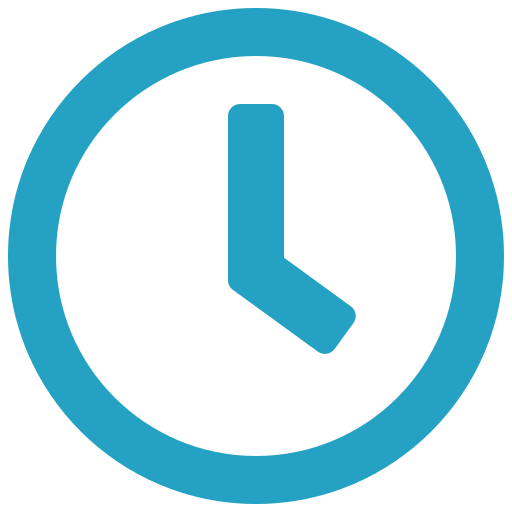

Ako ich rozlíšiť?
Návod ako rozlíšiť hoaxy, dezinformácie a konšpirácie.


 približne 5 minút čítania
To, čo vlastne konšpirácie, hoaxy a dezinformácie sú, sa dozviete v tomto článku. Ako sa teda ale dokážeme pred týmito hrozbami chrániť? Nižšie sme v jednotlivých krokoch zhrnuli to, ako najmä pomocou kritického myslenia dokážete odhaliť pochybné informácie.
Rozšírenie Antivýtrus vás upozorní na potenciálne dezinformácie, konšpirácie a hoaxy z hlavných dezinformačných webov na Slovensku a v Česku.
Keďže Antivýtrus vás zatiaľ upozorňuje iba na klamlivé a zavádzajúce informácie z najväčších konšpiračných webov, musíte si stále dávať pozor na dezinformácie, ktoré sa šíria na iných webových stránkach alebo na sociálnych sieťach, napr. v uzavretých skupinách alebo priamo zo súkromných profilov.
Overenie faktov je pomerne zdĺhavá práca, ale overiť si zdroj sa dá rýchlejšie. Všímajte si zdroj, aj ak zdieľa príspevok niekto z vašej rodiny alebo priateľov. Pozrite sa tiež, na aké iné zdroje (ak vôbec) sa daný článok odvoláva. Sú argumenty niečím podložené alebo ide skôr o názor daného človeka?
Ak sa jedná o jednotlivca, ktorý šíri ,,utajené” informácie, spýtajte sa sami seba: Je to reálny odborník, ktorý by sa teoreticky mohol k týmto informáciám dostať alebo sa jedná len o samozvaného “experta”? Informácie typu “jedna pani povedala” nepovažujte za dôveryhodné.
Už jednoduché vyhľadanie zdroja (periodika, stránky, osoby) napr. na Google alebo na danej sociálnej sieti vám môže ponúknuť nejaké základné informácie o tom, či sa jedná o relevantný zdroj.
Na sociálnych sieťach ako Facebook si skontrolujte účet, ktorý zdieľa danú informáciu. Pozrite sa na ich zverejnené informácie, na ich ďalšie príspevky či fotky, a hľadajte veci, ktoré môžu byť podozrivé. Vytvárajú si svoj vlastný obsah alebo skôr zdieľajú informácie z iných zdrojov? Zdieľajú príspevky príliš často?
Ak sa jedná o webové stránky, všímajte si, kto je autorom článkov, či je na stránke zverejnený relevantný kontakt, na ktorý sa môžete obrátiť alebo čo o danej stránke hovoria iné stránky na internete. Ak sú všetky informácie nejasné alebo anonymné, pravdepodobne sa nejedná o hodnoverný zdroj.
Existuje viacero spôsobov, ako môžete zistiť, ktorým zdrojom môžete dôverovať. Na hlavné konšpiračné slovenské a české médiá vás po nainštalovaní upozorní naše rozšírenie Antivýtrus. Polícia SR sa tiež venuje vyvracaniu najväčších hoaxov na internete, a preto stojí za to, sledovať ich stránku pravidelne. Ak čítate správy v angličtine, zahraničné relevantné média hodnotí napr. NewsGuard. Takzvané fact-checkerské stránky ako Demagog.sk, Snopes.com, Factcheck.org a BBC Reality Check sa venujú overovaniu informácií zdieľaných cez internetové portály alebo priamo od politikov. Rýchlym vyhľadávaním na Googli sa tiež dá zistiť, ktorý zdroj je dôveryhodný. Vyberte si jednoducho, čo vám v danej chvíli vyhovuje.
V súčasnosti je vizuálna komunikácia omnoho populárnejšia, a preto často natrafíte aj na dezinformáciu, ktorá odkazuje na fotografiu alebo videozáznam, ktorý má imitovať dôkaz. Pozrite si fotku zblízka a hľadajte na nej podozrivé detaily ako napr. meno ulice, obchodu, evidenčné číslo vozidiel, ktoré nekorešpondujú s tým, čo sa snaží dezinformácia “preukázať” danou fotografiou alebo videom. Väčšinou sa jedná o iné miesto, obdobie alebo situáciu.
Na platformách ako Google, Bing, Yandex a TinEye je možné si overiť, kedy sa daná fotografia objavila na internete prvýkrát. Tým si môžete potvrdiť, či bola nejakým spôsobom zmanipulovaná.
Našli ste v texte chybu? Napíšte nám na mail@antivytrus.sk.
Viac o tejto téme sa môžete dočítať tu:
Návod ako rozlíšiť hoaxy, dezinformácie a konšpirácie.

Ako sa porozprávať o dezinformáciách s naším okolím?

Trošku viac informácií o projekte Antivýtrus.